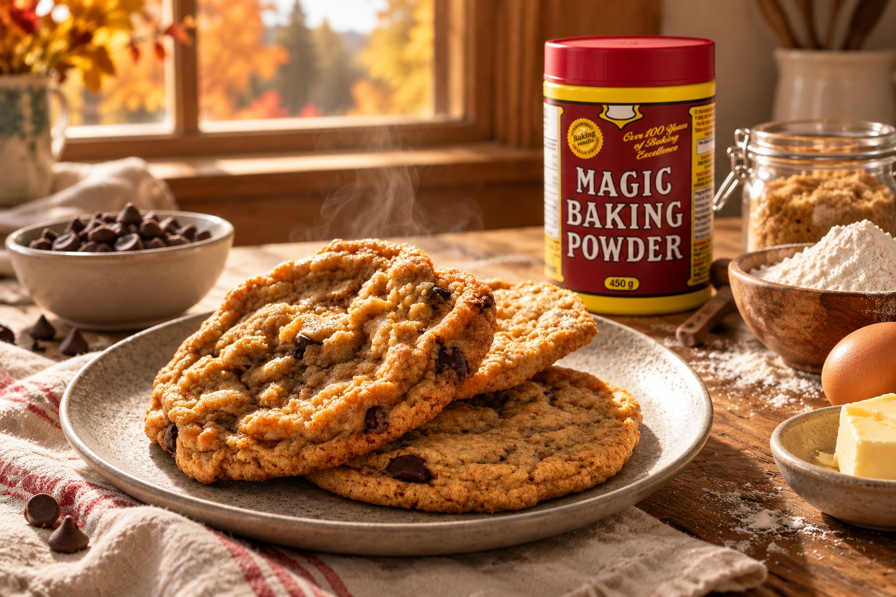

The World’s Best Chocolate Chip Cookie

Melted butter and brown sugar make soft-centred cookies with golden edges. Chill the dough for a thicker cookie.
The Recipe
- Oven
- 350°F (175°C)
- Prep Time
- About 15 minutes
- Bake Time
- 9–14 minutes, depending on size
- Optional Chill
- 20 minutes
- Makes
- 9 large or 16 medium cookies
Prep time is an estimate; start with melted, cooled butter. Optional chilling adds 20 minutes; bake time is per tray.
Ingredients
- 1⅓ cups all-purpose flour, spooned and leveled
- ½ teaspoon baking powder
- ½ teaspoon baking soda
- ½ teaspoon fine sea salt
- ½ cup (8 tablespoons) unsalted butter, melted and cooled
- ⅔ cup light brown sugar, packed
- ⅓ cup white granulated sugar
- 1 large egg, at room temperature
- 1½ teaspoons pure vanilla extract
- ⅓ cup semisweet chocolate chips or chunks
- ¼ teaspoon flaky sea salt, for garnish (optional)
Instructions
- Preheat & prep: Set the oven to 350°F (175°C). Line a large baking sheet with parchment paper.
- Whisk dry: In a small bowl, whisk the flour, baking powder, baking soda, and fine sea salt.
- Mix wet: In a main bowl, whisk the melted butter, brown sugar, and granulated sugar for 1 minute until smooth; beat in the egg and vanilla.
- Combine: Fold the dry ingredients into the wet ingredients until just combined—do not overmix. Fold in the chocolate.
- Portion: Divide the dough into 9 equal portions for large cookies or 16 equal portions for medium cookies. Space them 2 inches apart on the baking sheet, using additional sheets as needed.
- Chill (optional): Chill the dough balls for 20 minutes for a thicker, chewier texture.
- Bake: Bake for 9–14 minutes, depending on cookie size, until the edges are light golden and the centers remain soft. Start checking at 9 minutes.
- Cool & finish: If using, sprinkle immediately with the flaky sea salt. Rest for 5 minutes on the sheet, then transfer to a wire cooling rack.
The Economic Lesson
Simple pantry staples can make an affordable treat, teach practical skills, and bring a family together.
What a batch costs
Ingredient cost = package price × amount used ÷ package quantity. Count pantry ingredients at their replacement cost.
Illustrative CAD prices, not live quotes. Weights are approximate costing conversions; use your receipts.
| Ingredient | Example package | Used | Cost |
|---|---|---|---|
| Flour | C$8 / 5 kg | 160 g | C$0.26 |
| Butter | C$6 / 454 g | 113 g | C$1.49 |
| Brown sugar | C$3 / 1 kg | 142 g | C$0.43 |
| White sugar | C$3 / 2 kg | 66 g | C$0.10 |
| Egg | C$4.50 / dozen | 1 | C$0.38 |
| Vanilla | C$10 / 125 mL | 7.5 mL | C$0.60 |
| Chocolate chips | C$4 / 300 g | 57 g (about ⅓ cup) | C$0.76 |
| Baking powder | C$5 / 450 g | 2 g | C$0.02 |
| Baking soda | C$2 / 500 g | 2.5 g | C$0.01 |
| Salt | C$2 / 1 kg | 3 g | C$0.01 |
| Ingredients, calculated before rounding rows | C$4.05 | ||
Conversions: King Arthur Baking’s weight chart. Optional finishing salt and new equipment excluded.
Add C$0.25 electricity and C$0.10 parchment: C$4.40 per batch, C$0.28 per medium cookie, or C$0.49 per large cookie. Electricity assumes 1.25 kWh at C$0.20/kWh for preheating and all trays.
- Butter: 36.9%
- Chocolate: 18.8%
- Other: 44.3%
Unit pricing & bulk
Unit price = price ÷ quantity. Compare packages per 100 g, then consider cash, storage, and likely use.
| Bag | Checkout | Per 100 g | 160 g used |
|---|---|---|---|
| 1 kg | C$3 | C$0.30 | C$0.48 |
| 5 kg | C$8 | C$0.16 | C$0.26 |
The larger bag saves 22¢ per batch. At C$3/kg, you must use about 2.67 kg to justify its C$8 outlay. If you need only 2 kg, two smaller bags cost C$6.
For a single-use mix, include any required eggs, butter, and other additions. Compare the finished batch cost and preparation time.
Family time & learning
Baking produces cookies, skills, and time together. Family bonding is a return on the activity. A slower batch with children can be time well spent.
| Activity | Skill | Question |
|---|---|---|
| Read prices and measure flour | Unit pricing and arithmetic | What did the amount we used cost? |
| Divide 9 or 16 portions | Fractions and fairness | Why is 1/9 larger than 1/16? |
| Plan who gets a cookie | Sharing and planning | Who would enjoy the next one? |
| Prepare and clean up | Cooperation and responsibility | How can we make next time easier? |
Choose age-appropriate jobs; an adult handles the hot oven. Health Canada encourages cooking together and learning food skills.
Opportunity cost is the value of the best alternative you give up. Baking together may be your preferred use. On a busy day, convenience may help instead.
The calculator counts cash by default. Its optional time allowance illustrates a tradeoff: 25 active minutes at C$20/hour adds C$8.33, giving a C$12.73 total. This is a comparison tool, not a price on family time.
Home production adds value through work and skill. In this example, replacing a planned C$16.50 bakery purchase with a C$4.40 batch leaves C$12.10 in the budget. If no bakery purchase was planned, baking is a C$4.40 treat expense. A bakery’s price also pays for labour, premises, and convenience.
OpenStax: opportunity cost; Statistics Canada: unpaid household production.
Portions & enjoyment
Marginal utility means the extra enjoyment from one more cookie. Once satisfied, another may add less pleasure. Saving or sharing it can create another enjoyable moment.
A medium cookie has 43.75% less dough than a large one when divided evenly. The batch’s total food energy and nutrients are unchanged.
Wholesome choices
Homemade gives you ingredient control. This butter-and-sugar recipe is still a treat; nutrition depends on ingredients, portions, and your overall eating pattern.
| Choice | Benefit | Tradeoff |
|---|---|---|
| Replace 25% of flour with whole-grain wheat flour | Adds whole grains | Test texture before increasing to 50%. |
| Make 16 medium cookies | Smaller portions | Same total batch nutrients. |
| Try a little less sugar | Less added sugar | Spread, browning, and texture may change. |
| Compare chocolate labels | Choose sugar content and price | “Dark” alone does not guarantee less sugar or saturated fat. |
Substitutions are untested in this recipe. Whole-wheat baking guidance; sugar-reduction tests. In Canada, look for “whole grain” on the flour label.
A familiar packaged sandwich cookie lists 160 kcal and 14 g added sugar per 34 g on its U.S. manufacturer label (checked October 18, 2026). Use the nutrition card above for this recipe’s estimated values. Compare equal weights when measured; a homemade cookie can have more sugar or saturated fat than a packaged one.
Compare equal grams, sugar, saturated fat, fibre, and portion size. Health Canada’s label guide explains how.